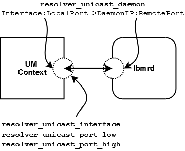

The image below shows a simplified relationship between the primary unicast resolver network options.

If using multiple lbmrd instances with a single context, you can configure resolver_unicast_interface and resolver_unicast_port_low/high and omit the Interface:LocalPort section of resolver_unicast_daemon.
See also Unicast Topic Resolution for general information on Unicast Topic Resolution.
Reference <-
resolver_unicast_daemon (context) <-
- Enable Unicast UDP-based TR and add one or more unicast resolver daemon (lbmrd) specifications to the current lbmrd list. Unlike most other UM settings, every time this setting is called, it adds one or more daemon specifications to the list, and does NOT overwrite previous specifications.
- Setting this option Disables Multicast UDP-based TR, but does not affect whether TCP-based TR is enabled or disabled. See UDP-Based Topic Resolution Details.
- For the configuration file as well as string API method of setting this option, the string value consists of one or more lbmrd specifications separated by commas or semicolons, formatted as follows:
[Iface[:Src_Port]->]IP:Dest_Port[,...]
-
- You can omit either the
Src_Port or both the Iface and Src_Port, in which case the default settings resolver_unicast_interface (context) and resolver_unicast_port (context) are used.
- Because each entry adds a new daemon specification and does not overwrite previous values, a special construct must be used to clear a previously-specified list. An entry with the IP address of 0.0.0.0 and port of 0 removes all previous daemon specifications. This can be useful if multiple configuration files are used, and a later file should override the daemon list from an earlier file.
- Possible formats of each entry are as follows:
Interface:LocalPort->DaemonIP:RemotePort
Interface->DaemonIP:RemotePort
DaemonIP:RemotePort
- You can specify
Interface in any of the ways described in Specifying Interfaces.
- When the binary form of option setting is used, UM does NOT expect an array of structures. Instead, only one lbmrd specification can be supplied for each call to lbm_context_attr_setopt(). However, when the binary form of option retrieval lbm_context_attr_getopt() is used, the list of lbmrds is returned as an array, and the
optlen parameter should be set as: optlen = (max_num_lbmrds * sizeof(lbm_ucast_resolver_entry_t));
| Scope: | context |
| Type: | lbm_ucast_resolver_entry_t |
| When to Set: | Can only be set during object initialization. |
| Version: | This option was implemented in UMS 5.0 |
resolver_unicast_interface (context) <-
- Specifies the network interface over which UM receives unicast Topic Resolution messages.
- You can specify full IP address of interface, or just network part (see Specifying Interfaces for details).
- Default is set to default_interface (context), if specified. Otherwise, it is set to INADDR_ANY, meaning that it will accept unicast Topic Resolution messages on any interface.
- Note: if specifying an interface name in an XML-format file, see Interface Device Names and XML.
| Scope: | context |
| Type: | lbm_ipv4_address_mask_t |
| Default value: | 0.0.0.0 (INADDR_ANY) |
| When to Set: | Can only be set during object initialization. |
resolver_unicast_port_high (context) <-
- The highest local UDP port in a range of ports used for unicast topic resolution messages.
- The UM resolution daemon (lbmrd) sends unicast topic resolution messages to the UDP port range defined by this option and resolver_unicast_port_low (context).
- See Port Assignments for more information about configuring ports.
| Scope: | context |
| Type: | lbm_uint16_t |
| Default value: | 14406 |
| Byte order: | Host |
| When to Set: | Can only be set during object initialization. |
resolver_unicast_port_low (context) <-
- The lowest local UDP port in a range of ports used for unicast topic resolution messages.
- The UM resolution daemon (lbmrd) sends unicast topic resolution messages to the UDP port range defined by this option and resolver_unicast_port_high (context).
- See Port Assignments for more information about configuring ports.
| Scope: | context |
| Type: | lbm_uint16_t |
| Default value: | 14402 |
| Byte order: | Host |
| When to Set: | Can only be set during object initialization. |
resolver_unicast_receiver_socket_buffer (context) <-
- Value used to set SO_RCVBUF value of the UDP receivers for unicast topic resolution messages.
- In some cases the OS will not allow all of this value to be used. A value of 0 instructs UM to use the default OS values. See ref socketbuffersizes for platform-dependent information.
| Scope: | context |
| Type: | lbm_ulong_t |
| Units: | bytes |
| Default value: | 8388608 (8MB) |
| When to Set: | Can only be set during object initialization. |